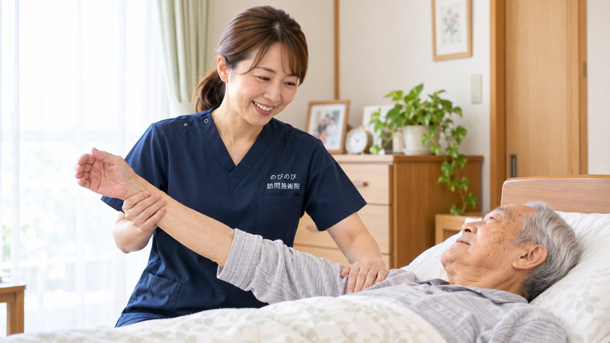

背中が丸い方の介護でつまずきやすいのは、姿勢そのものではなく、姿勢から起こる困りごとです。車いすで前にずり落ちてくる、食事のときにむせる、あお向けにするとつらそう、座っていると三十分もたない。どれも「まっすぐにできないから」ではなく、「丸いまま支えられていないから」起こります。伸ばすのではなく支えるという方向で、場面ごとにできることをまとめました。ご家族、そして介護に入られている方に読んでいただければと思います。
この記事のポイント
背中を伸ばそうとせず、丸いままの形に沿って隙間を埋めるのが基本です。いすは足の裏が床につく高さに。背もたれとのあいだの隙間にクッションを。机は少し高めにするとあごが上がらず、飲み込みが楽になります。車いすで前にずり落ちるときは、お尻の位置と座面の角度から見直します。後ろから押して伸ばすことは、骨がもろくなっている場合に痛みや骨折につながるので避けてください。こわばりが強くて姿勢が作れないときは、そこをゆるめることから始めます。
背中が丸いと、姿勢はどう崩れるのか
上半身が前に傾いていると、座ったときに重心も前に移ります。そのままでは前に倒れてしまうので、体は無意識に別のところで釣り合いを取ります。骨盤を後ろに倒して背中を丸め、お尻を前にずらして背もたれに寄りかかる形です。
この形になると、座面との接し方が変わります。お尻ではなく尾骨や仙骨のあたりで体重を受けることになり、長く座っていられません。さらに、前を見るためにあごが上がります。この「お尻が前にずれて、あごが上がる」組み合わせが、ずり落ちと飲み込みにくさの両方を作っています。
ですから、直したいのは背中の丸みではなく、お尻の位置とあごの向きです。ここを整えると、丸い背中のままでも楽に座れます。
いすに座るとき
まず、足の裏が床にしっかりつく高さかどうかを確かめてください。足が浮いていると、体を支える点が減り、お尻が前にずれやすくなります。高すぎるいすは、足台を置くだけで違ってきます。
次に、できるだけ深く座っていただきます。そのうえで、背中が丸いために背もたれとのあいだにできる隙間に、丸めたバスタオルか小さなクッションを入れます。入れる位置は腰のあたりです。背中の上のほうに入れると、かえって前に押し出されます。
ひじ掛けがあると、腕の重みをそこに預けられるので肩が楽になります。ひじ掛けのないいすなら、テーブルに腕を置いていただくだけでも変わります。
座っていられる時間が短いのは、根気がないからではありません。支える点が少ないほど短くなります。三十分もたなかった方が、タオルを一本入れただけで一時間座れるようになることもあります。
車いすで前にずり落ちるとき
座り直しを何度も頼まれる、というのはよくうかがう話です。押し戻すだけでは、また同じことが起こります。
確かめる順番としては、まずお尻がいちばん奥まで入っているか。移乗のあとに浅く座ったままだと、そこから必ずずれていきます。次に、足がフットレストに届いているか。届いていないと足が前に投げ出され、お尻を引っぱります。フットレストの高さを膝の角度に合わせてください。
それでもずれる場合は、座面が前に下がっていないかを見ます。座面と背もたれの角度、クッションの厚み、張りの伸び。古い車いすは座面の布が伸びて中央がくぼみ、前に滑りやすくなっていることがあります。ここは車いすを扱っている業者やケアマネジャーに相談すると、合うクッションを選んでもらえます。
滑り止めのクッションを敷く方法もありますが、体をずらせなくなると同じところに圧がかかり続けます。座り直しができない方の場合は、時間を決めて姿勢を変えることとあわせてお考えください。車いすで過ごす時間が長い方のケアは「車いすで過ごす時間が長い方の体のケア」にもまとめています。
食事のとき
背中が丸い方の食事で気をつけたいのは、あごの向きです。あごが上がった状態で飲み込むと、のどの通り道がまっすぐになり、食べものが気管に入りやすくなります。むせやすさの背景に、この姿勢があることがあります。
あごを引ける形にするには、まず机を少し高めにします。低い机に向かうと、のぞき込むためにあごが上がります。高めにして、腕を机に置ける高さにすると、自然に体が起きてあごが引けます。
いすと机の距離も近づけてください。遠いと前に身を乗り出すことになります。そして、足の裏が床につくこと。ここでも同じです。
ベッド上で召し上がる場合は、背上げの角度だけでなく、先に体をベッドの奥まで寄せてから上げてください。浅い位置で背上げをすると、背中とベッドのあいだに隙間ができて、そこにずり落ちていきます。背中が丸い方は、上げたときに肩が浮きやすいので、肩の下と腰の隙間をクッションで埋めます。
飲み込みにくさが続くときや、食事のあとに咳が出るときは、そのままにせず医師に相談してください。姿勢の工夫でできることと、診てもらう必要があることは別です。
ベッドで休むとき
あお向けで背中が浮いてしまい、腰や背中が痛むという方が多くおられます。背骨が丸いまま平らなところに寝ると、体が支えられるのは後頭部とお尻だけになり、そのあいだが宙に浮きます。
このときは、浮いている部分を埋めます。背中の下に薄いクッションかたたんだタオルを差し込み、膝の下にも枕を入れます。膝を軽く曲げると腰の張りがゆるみ、それだけで楽になることがあります。頭の枕が高すぎるとあごが胸につくので、背中を埋めたぶん枕は低めに調整してください。
あお向けがどうしてもつらい方は、横向きが楽なことがあります。横向きでは、背中側と抱える側の両方にクッションを置いて、体がねじれないようにします。下になる肩が押しつぶされないよう、肩の位置を少し前に出しておくと痛みが出にくくなります。
寝て過ごす時間が長い方の背中と肩甲骨まわりのケアは、「寝て過ごす時間が長い方の肩甲骨・背中のはり｜在宅の鍼灸」で詳しくご紹介しています。
同じ姿勢を続けないこと
どんなに良い形を作っても、同じ姿勢のままでは固まります。目安として、座っているなら一時間に一度は体の向きを変える、立てる方なら立っていただく。それだけで背中の張りは変わります。
テレビの位置も見ておいてください。いつも同じ方向にねじって座っていると、そちら側だけが縮んでいきます。いすの向きを変えるか、テレビの位置をずらすかで、ねじれの時間を減らせます。
後ろから押して伸ばすことは避けてください
背中を伸ばしてあげたいという気持ちから、後ろから押したり肩を引いたりされることがあります。これは避けてください。
ご家族が体をさわってあげるとき、どこまでなら安全かは迷うところだと思います。加減のしかたは「高齢の親にマッサージをしてあげるとき」で詳しくご紹介しています。
背中が丸くなっている方の背骨は、骨がもろくなっていることが多く、後ろから力をかけることが新しい圧迫骨折につながることがあります。痛みが出れば動きたくなくなり、かえって固まります。骨と背中の丸まりのつながりは「骨がもろくなると背中は丸くなる？骨粗鬆症と円背のつながり」で詳しくご紹介しています。
伸ばすのではなく、丸いままの形に沿って隙間を埋める。この方向であれば、力もいらず、痛みも出ません。
こわばりが強くて、姿勢が作れないとき
クッションを入れても、そこに体が収まらない。深く座らせようとしても、腰が固くて骨盤が起きない。膝が伸びず、足が床につかない。こういうときは、姿勢の工夫より前にこわばりのほうを扱う必要があります。
訪問鍼灸マッサージでは、鍼とお灸でこわばった筋肉をゆるめ、あわせて関節を動かせる範囲を保つ練習を行います。腰、背中、胸の前側、股関節のつけ根、膝の裏。姿勢を作るのに関わるところを順にゆるめていくと、同じクッションでも収まり方が変わります。
はり・きゅうの施術が医療保険の対象になるのは、慢性的な痛みやしびれ、麻痺にともなうこわばりについて、医師が治療の必要を認めて同意した場合です。うかがったときは、ご本人への施術だけでなく、その家にあるいすやベッドを使った支え方も一緒に見ていただきます。介護に入られている方からのご相談も承っています。
費用は保険で、1回約395円から
医師の同意があって医療保険が使える場合、自己負担が1割の方で1回およそ395円が目安です。対応エリア内であれば、別途の出張費はいただきません。くわしい内訳は料金のページをご覧ください。
はじめての方には無料体験をご用意しています。ふだんのいすやベッドで、どう支えると楽になるのかを見ていただけます。
よくある質問
クッションはどんなものを使えばいいですか？
専用のものでなくても、丸めたバスタオルや小さな座布団で十分に間に合います。大事なのは形よりも入れる位置で、背中の丸みでできた隙間を腰のあたりで埋めることです。体に合わないまま厚いものを入れると前に押し出されるので、薄いものから試してください。
車いすで前にずり落ちるのを止める方法はありますか？
お尻がいちばん奥まで入っているか、足がフットレストに届いているか、座面の布が伸びて前に滑りやすくなっていないか。この順に見ていくと原因が絞れます。合うクッションの選び方は、車いすを扱っている業者や担当のケアマネジャーに相談すると調整してもらえます。
食事でむせるのは姿勢のせいですか？
姿勢が関わっていることはあります。あごが上がった状態で飲み込むと気管に入りやすくなるため、机を少し高めにしてあごを引ける形にすると変わることがあります。ただ、飲み込む働きそのものが落ちている場合もありますので、むせが続くときは医師にご相談ください。
あお向けがつらそうです。横向きのほうがいいですか？
横向きが楽な方は多くおられます。その場合は、背中側と抱える側の両方にクッションを置いて体がねじれないようにし、下になる肩を少し前に出しておくと痛みが出にくくなります。あお向けを続けたい場合は、背中の浮いている部分を埋め、膝の下に枕を入れてください。
介護している家族からでも相談できますか？
できます。ご本人、ご家族、施設の方、担当のケアマネジャーの方、どなたからでもご相談いただけます。支え方についてのご相談だけでも構いません。
対応しているのはどの地域ですか？
大阪府では豊中市・吹田市・茨木市・高槻市・箕面市・摂津市・池田市、大阪市では淀川区・東淀川区・都島区・北区・旭区、兵庫県では尼崎市・伊丹市にうかがえます。エリア内は別途の出張費がかからず、どこでも同じ料金です。